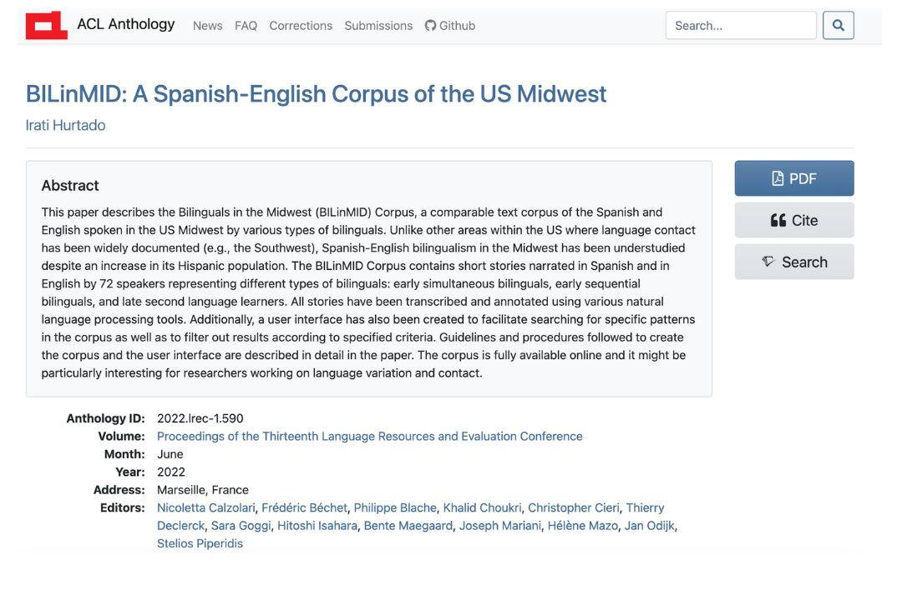

The Bilinguals in the Midwest (BILinMID) Corpus documents the Spanish and English spoken in the Midwest of the United States by different types of bilinguals. The corpus comprises written transcriptions of The Little Red Riding Hood fairy tale, which participants narrated orally. This is the first corpus to document the Spanish and English spoken in this region of the United States.
The bilingual speakers who participated in the study were either born in the United States or in a Spanish-speaking country, but at the time they were recorded, they had all lived in the United States for a long period of time. Many of the bilingual speakers recorded are heritage speakers, making this one of the few heritage language corpora out there. Information about each participant's background was also collected and it is part of the corpus' metadata.
The BILinMID Corpus is open-access (licensed by a Creative Commons CC BY License). It has a user interface developed with R Shiny that allows users to perform a variety of queries. The process of corpus creation is described in detail in a paper published in the ACL Anthology.